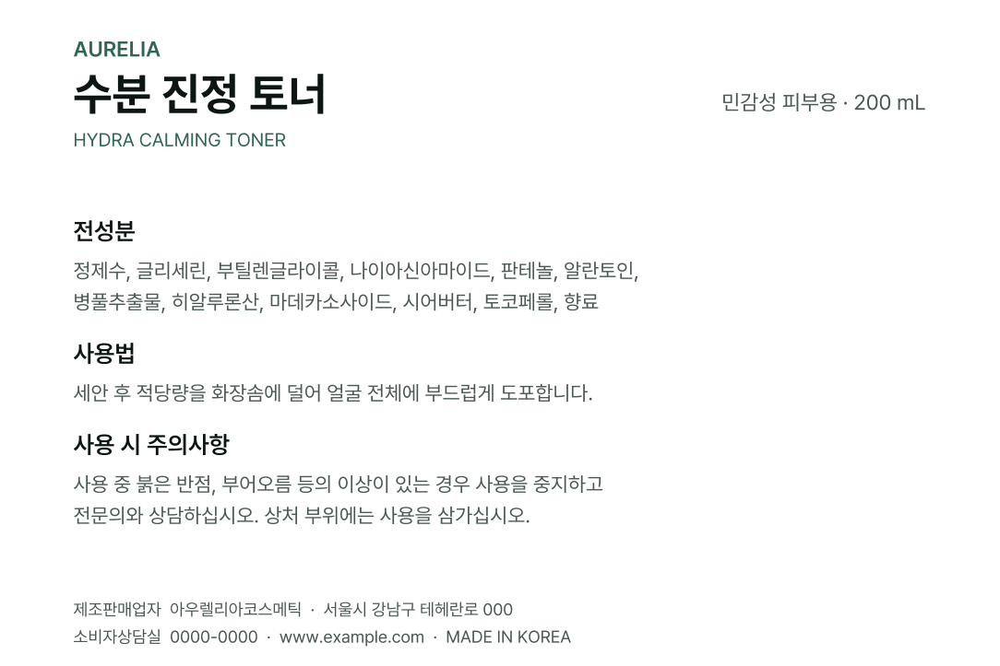

오타 하나에 견적이 붙습니다
전화번호 한 자리, 전성분 한 단어를 고치려고 원본 작업 파일을 다시 찾거나 처음부터 조판을 다시 짜야 합니다.
인쇄소에 넘긴 .ai · PDF에서 텍스트가 아웃라인 처리돼 한 글자도 수정할 수 없나요. 원래 서체·크기·자간·행간을 역산해 진짜 텍스트로 되돌려 드립니다. 디자인은 1px도 건드리지 않습니다.


아웃라인(윤곽선 만들기)은 인쇄 사고를 막으려고 하는 필수 작업입니다. 문제는 그 순간 글자가 도형 덩어리가 되어 되돌릴 수 없다는 것입니다.
전화번호 한 자리, 전성분 한 단어를 고치려고 원본 작업 파일을 다시 찾거나 처음부터 조판을 다시 짜야 합니다.
퇴사한 디자이너, 계약이 끝난 외주사, 사라진 하드디스크. 손에 남은 건 인쇄용 최종 파일 한 개뿐입니다.
눈대중으로 다시 조판하면 자간·행간이 미묘하게 어긋납니다. 재인쇄본과 기존 인쇄본이 달라 보이는 사고가 여기서 납니다.
글자 모양 자체를 서체 원본과 픽셀 단위로 대조해 무엇이었는지 알아냅니다. 그다음 크기·자간·행간을 역산해 같은 자리에 진짜 텍스트를 얹습니다.
페이지 안의 패스를 낱글자로 끊고, 다시 단어와 줄로 묶습니다.
272종 서체의 글자 윤곽과 겹쳐 보며 어느 서체·굵기인지 찾습니다. 확신이 없으면 «미상»으로 남깁니다.
글자 간격을 되짚어 원래 조판값을 복원합니다. 인쇄에서 흔히 쓰는 정수 pt·mm 격자에 맞는지도 확인합니다.
도형을 지우고 그 자리에 편집 가능한 텍스트를 넣습니다. 색·배경·이미지는 손대지 않습니다.

겉모습은 바뀌지 않습니다.
달라지는 건 고칠 수 있는가 하나입니다.
확신이 없으면 손대지 않습니다. 서체가 확정되지 않거나 조판값이 어긋나는 줄은 복원하지 않고 원본 도형 그대로 남깁니다. 그럴듯하지만 틀린 결과가 이 일에서 가장 나쁜 실패이기 때문입니다.
복원본을 원본 위에 정확히 포개어 렌더링한 뒤 픽셀이 어긋나는 곳을 찾습니다. 아래는 실제 검사 이미지입니다.


이 페이지의 모든 이미지와 수치는 저희가 만든 가상 샘플 라벨을 실제 복원 시스템에 통과시켜 나온 결과입니다. 연출하거나 손보지 않았고, 고객 파일도 아닙니다. 복원하지 않은 3줄은 삭제되지 않고 원본 도형 그대로 남아 있습니다.
어디를 되살렸고 어디를 못 되살렸는지 숫자로 적어 드립니다. 믿어달라고 하는 대신, 확인하실 수 있게 합니다.

복원 대상인지 아닌지 몇 초 안에 알려 드립니다. 이 검사는 브라우저 안에서만 실행되며 파일은 어디로도 전송되지 않습니다.
브라우저에서 하는 간이 판정입니다. 정확한 진단 — 몇 줄이 실제로 되살아나는지 — 은 파일을 보내주시면 무료로 돌려 확인해 드립니다.
진단은 무료입니다. 결과를 보고 결정하셔도 됩니다. 되살리지 못하면 받지 않습니다.
원본 서체를 쓸 수 있는 경우
문의 / 건
위치·크기·자간을 그대로 되살립니다
문의 / 건
되살릴 수 없다고 판단되는 경우
0원
분량과 난도에 따라 크게 달라지므로 정찰가를 걸어두지 않습니다. 진단 결과에 복원 가능한 줄 수와 금액을 함께 보내 드립니다. 보시고 결정하시면 됩니다.
비용도, 조건도 없습니다. 몇 줄이 복원되는지와 예상 금액을 함께 회신드립니다.
보내주신 파일은 진단·복원 목적 외에 사용하지 않으며, 요청하시면 즉시 파기합니다. 비밀유지약정이 필요하시면 먼저 말씀해 주세요.